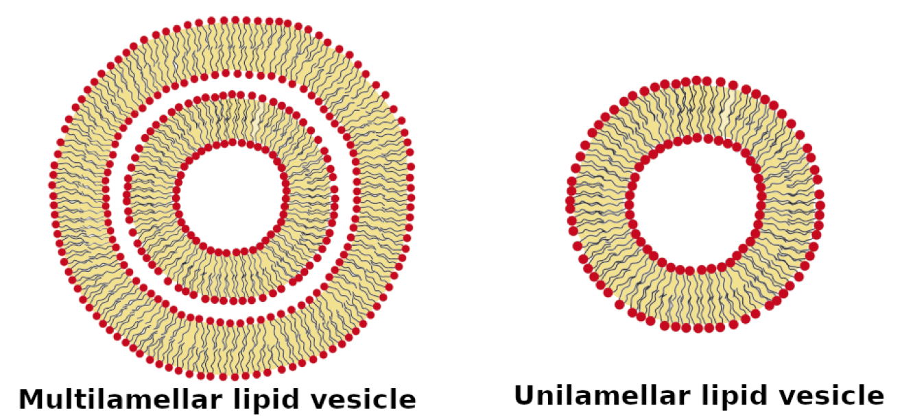
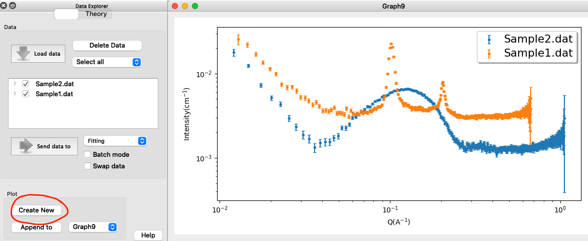
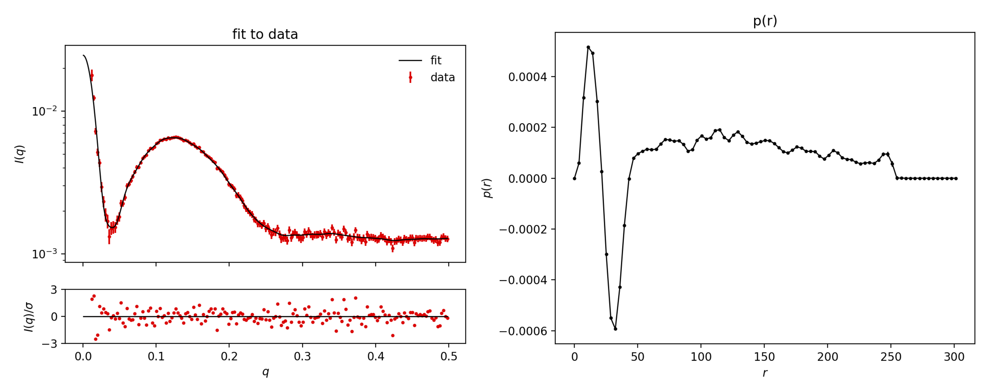
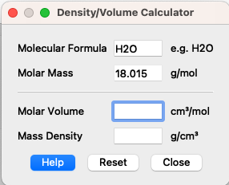
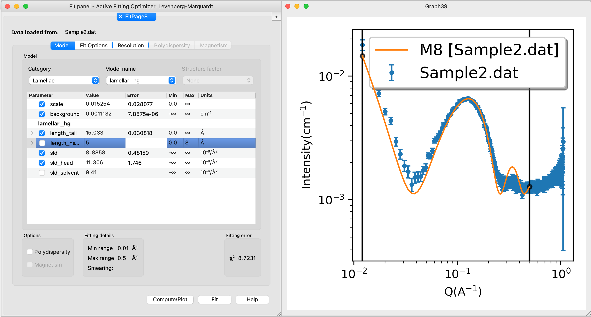
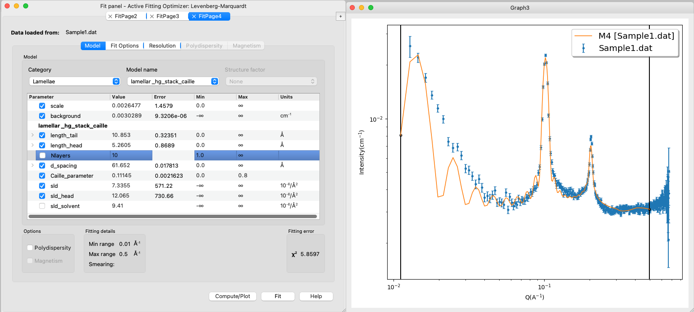

Home
Tutorial: Lamellar Structures
Tutorial contributors: Andreas Haahr Larsen, Jacob Judas Kain Kirkensgaard.

Multilamellar lipid vesicle. Adapted from Luchini and Vitiello, 2021, Biomimetics 6: 3, with permission.
Before you start
- Download and install SasView (for Part 3)
Learning outcomes
The overall learning outcome is to understand the effect of formfactors vs structure factors on lamellar structures.- Understand how the scattering from lamellar structures looks (unilamellar vesicles, multilamellar vesicles).
- Recognize scattering patterns with Bragg peaks from multilamellar structures.
- Calculate SLDs and fit SAXS data of unilamellar and multilamellar structures using SasView.
Part 1: Visual inspection of data
- You have measured two SAXS datasets:
- Sample1_clean.dat: DPPC in H2O
- Sample2_clean.dat: lecithin extract of unknown composition, but expected to contain much DPPC, also in H2O.

Figure from Luchini and Vitiallo 2021 (reprinted with permission). Load the data into SasView and create a new plot:

Comment on the differences. Which is which? What do the peaks of Sample1.dat represent?
Derive the layer distance the position of the Bragg peaks ($q$-value)? (Hint)
Part 2: Pair distance distribution (this part can be skipped)
A measured SAXS signal is a Fourier transformation of the irradiated sample. Therefore one can try to Fourier tranform the data back, to get structural information, without having to do any fitting (for more information, see the tutorial Pair distance distribution).
Go to: BayesApp, which is a web application for doing indirect Fourier transformation of small-angle scattering data. Upload the Sample2.dat datafile to BayesApp, choose Transformation: Negative (to allow for negative values of the pair distance distribution). Give an estimate for the maximum distance, e.g. 500 Å, set qmax to 0.5 Å-1, and press Submit:

The $p(r)$ display negative and positive parts. This is a sign of oscillations in electron density of the sample. That stems from the low density (relative to water) of the lipid tail groups and the high density (again, relative to water) of the lipid head
groups. The first part of the $p(r)$, from 0 to ca 50 Å, corresponds to a bilayer, and the larger distances corresponds to the rest of the vesicle.
For Sample1.dat, you need to increase the number of points in $p(r)$ from the default 70 to, e.g., 200 (under Advanced options). This makes BayesApp slower, but allows it to better fit the Bragg peaks. Also, provide a larger estimate of the maximum distance, e.g. 800 Å. Press submit:

For Sample1.dat you will get a lot of oscillations. This corresponds to the many layers with positive and negative SLDs (positive: higher electron density than water, negative: lower electron density than water).
Part 3: Fit the data with an analytical model
Before we fit the data, we need to consider all prior knowledge. This is critical because fitting SAS data is an ambiguous inverse problem, i.e. there are several models that can fit the data. First and foremost, we must estimate the scattering length densities (SLD) and excess scattering length density (ΔSLD = SLD - SLDH2O) of DPPC head and tail groups.
The molecular volumes can be determined experimentally and are 30 Å3 for H2O, 325 Å3 for DPPC head groups and 969 Å3 for DPPC tail groups. Use SasView's Density/Volume calculator (Tool -> Density/Volume calculator) to get the mass densities. You need to type in the chemical formula and molar volume. Be aware of unit conversion (Hint).

Then use SasView's SLD calculator to get the SLD values for solvent, head and tail group (solution).
Use the SasView models lamellar_hg (unilamellar vesicles) or lamellar_hg_stack_caille (multilamellar vesiceles) to fit the data. Start with Sample2.dat, as this data has the least features and therefore, most likely can be fitted easier.
Select the dataset, press "Send data to" and select "Fitting" in the menu. Choose one of the models (under the category: Lamellae). Always start with the simplest model (in this case, that is lamellar_hg, unilamellar vesicles). You can add complexity if the simpler model does not fit data.
Before you fit the data, type in reasonable values for all parameters. DPPC has a tail length of 10-15 Å and a head length of 2-5 Å.
When fitting a model to SAXS data, you would often not fit all parameters at once, you may follow this "protocol":
- Protocol for fitting - simpler case of unilamellar vesicles
- Calculate the scattering from the model (no fitting yet) by pressing "Compute/Plot".
- Ignore the first point, by setting qmin to 0.01 (under Fit Options). Ignore the last points by setting qmax=0.5
- Fit scale and backbround (set a check-mark there and press "Fit"). Keep the other parameters fixed.
- You may try to vary the parameters one at a time and press "Compute/Plot" to investigate what effect it has on the calculated scattering.
- Now, try to fit the length_tail and length_head (together with scale and background). This should give a reasonable fit. You may have to fix length_tail or set an upper limit, as, for some reason, a good fit can be achieved for Sample2 with length_tail of around 15, which is unrealistic.
- In the end, you may try to refine the scattering length densities, that you calculated. They should not be too different from the calculated values. If you fit all SLDs (also solvent SLD), then you get "nan" as error-estimate on that parameter - why? (Hint)
For the model lamellar_hg_stack_caille (multilamellar vesiceles), there are some additional steps in the fitting protocol:
- Protocol for fitting - more complex case of multilamellar vesicles
- Before fitting, estimate a good initial value for the distance between layers, d_spacing, (see Part 1) and for the number of layers , Nlayers (see Part 2).
- Ignore the first point, by setting $q_\mathrm{min}=0.01$ (under Fit Options). Ignore the last points by setting $q_\mathrm{max}=0.5$
- Try to refine d_spacing by fitting this parameter together with scale, background and Caille_parameter.
- (OBS: the model lamellar_hg_stack_caille has a bug, so Nlayers cannot be fitted - try to vary it manually instead.)
- Then fit the length_tail and length_head. Are the values reasonable? else, try to fix one or set min/max values.
- In the end, refine the scattering length densities. They should not be too different from the calculated values.
The fit may look like this for Sample2:
And like this for Sample1:
Comments on the results. You may not get perfect fits (reduced $\chi^2$ are not unity) - this is ok. This means that the models are not perfect - how could the models be improved? (Hint)
The goal was not to obtain perfect fits, but to answer relevant scientific questions: what phase does the two lipid mixtures form? - the models are sufficently good to answer that question. And to answer other questions, e.g., how does the structure change if we change temperature, lipid composition (e.g., a more biologically relevant composition), concenttration, etc
Challenges
- To-come, not made yet.